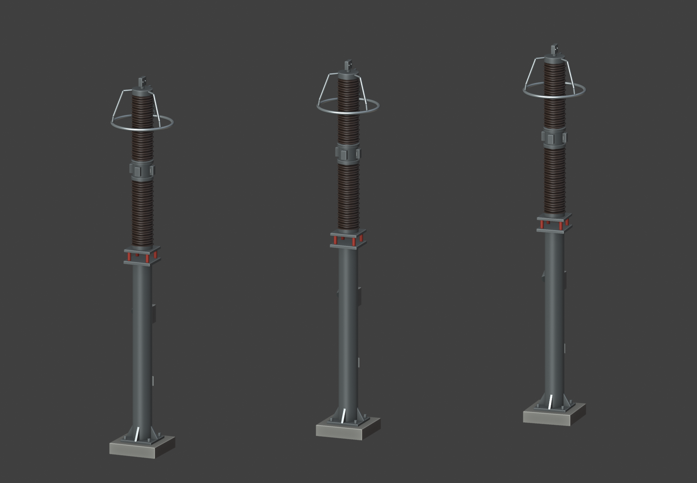
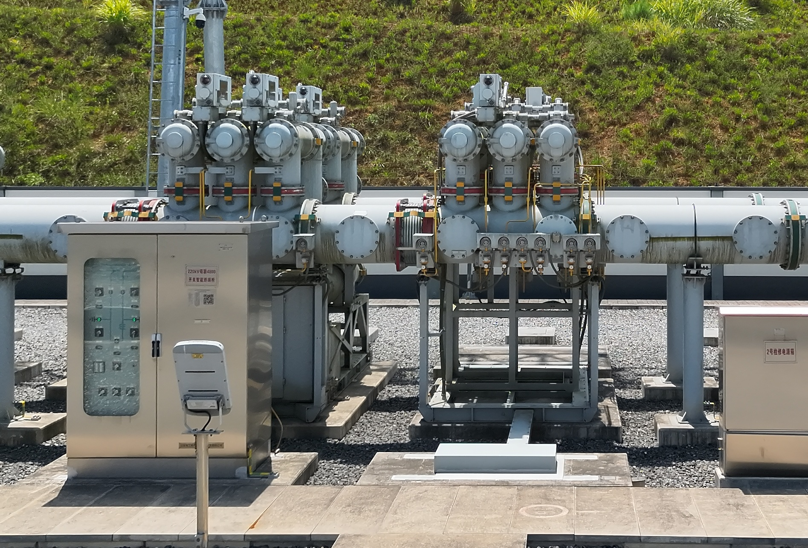
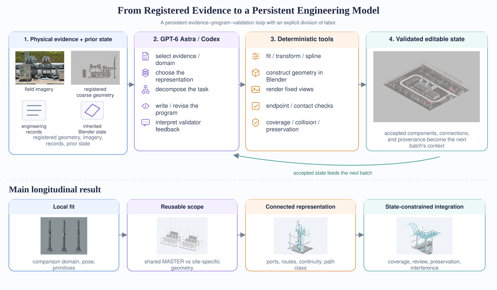
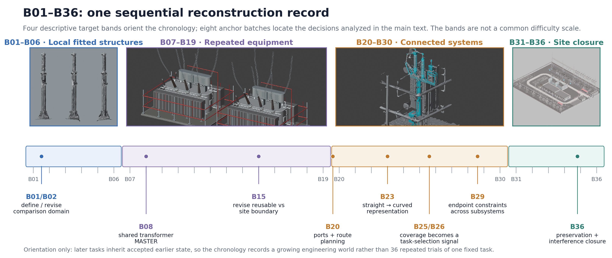
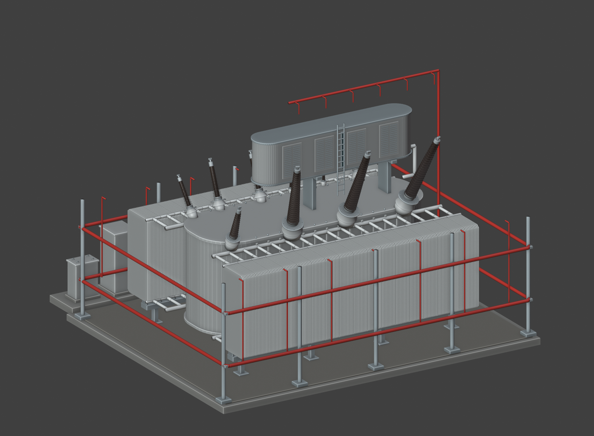
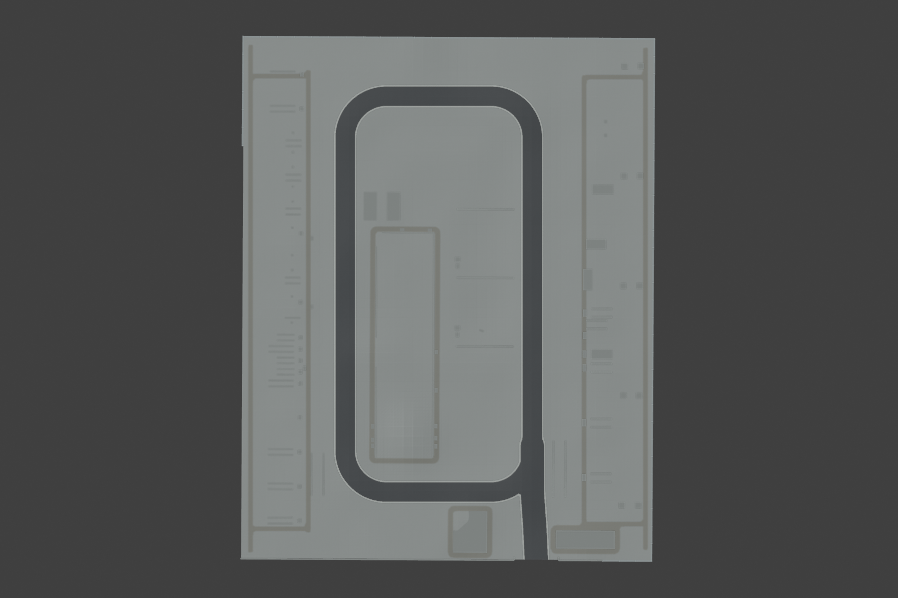
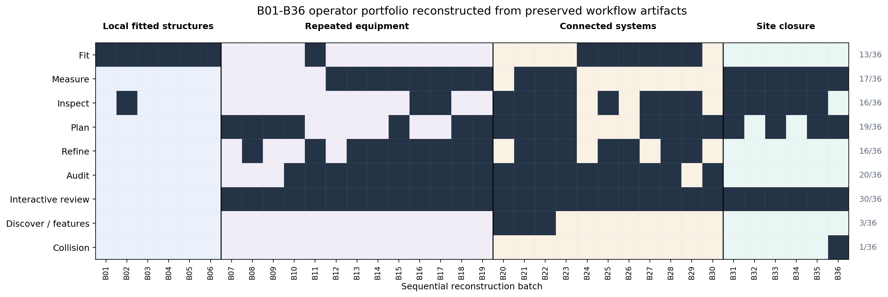
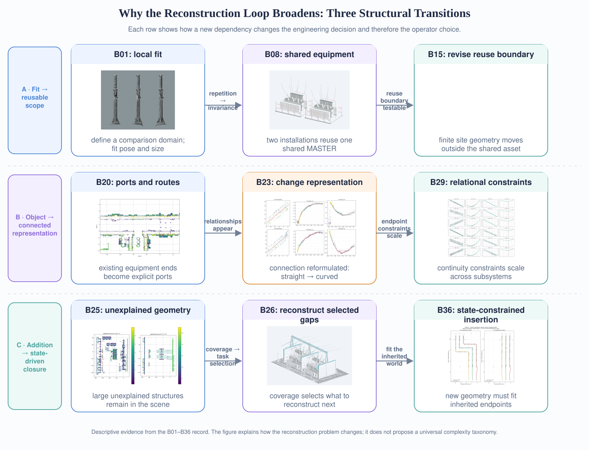
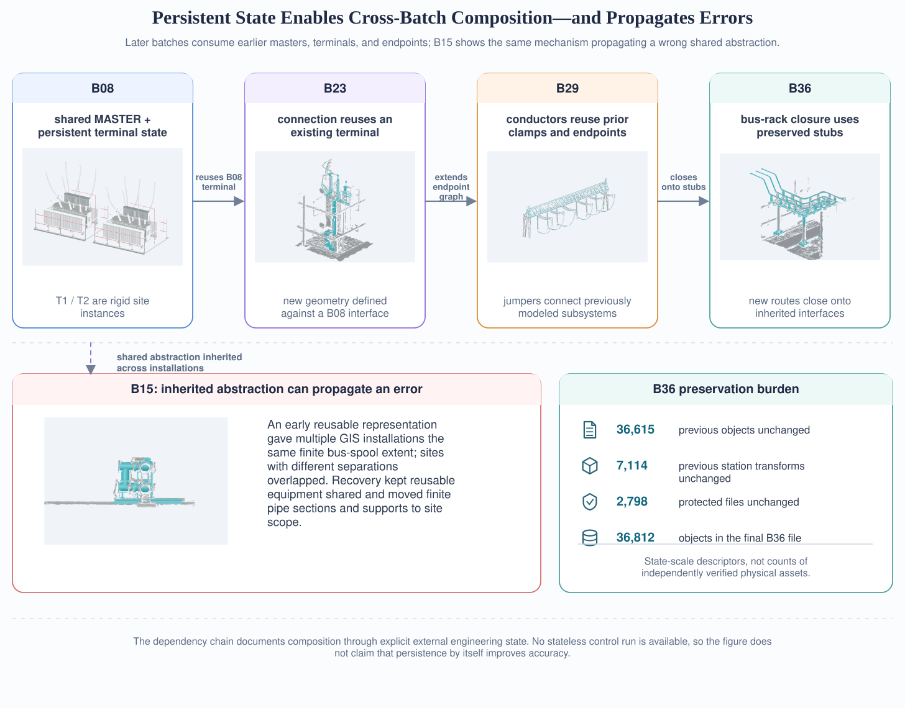

B01–B06
Local fitted structures局部拟合结构
pose/scale fitting of arresters, wall and gate; comparison-domain definition避雷器、围墙与大门的位姿/尺度拟合；比较域定义
B01/B02: domain redefined, 4.84/7.32/5.10 cm screen retained as failedHow does a persistent general-purpose reasoning workflow change as industrial 3D reconstruction progresses from local fitting to reusable equipment, connected representations, and state-constrained site closure?
当工业三维重建从局部拟合推进到可复用设备、连接表示和受状态约束的整站收尾时，一个持续的通用推理工作流会如何变化？
We study GPT-6 Astra/Codex over B01–B36, a 36-batch reconstruction of one operating 220 kV substation from registered photogrammetric geometry, field imagery, engineering records, and inherited Blender state. Local fitting remains useful throughout, while the operator portfolio broadens as dependencies accumulate; numerical estimation and acceptance stay in deterministic geometry code; and persistent external state enables cross-batch composition while propagating erroneous shared abstractions until they are revised. The study does not establish model superiority, independent survey accuracy, or cross-site generalization.
我们研究 GPT-6 Astra/Codex 在 B01–B36 上的表现：这是一座运行中 220 kV 变电站的 36 批次重建记录，输入包括注册摄影测量几何、现场影像、工程记录和继承的 Blender 状态。记录显示：局部拟合始终有效，而算子组合随依赖累积不断扩展；数值估计与验收始终由确定性几何代码完成；持续外部状态使跨批次组合成为可能，同时也会传播错误的共享抽象，直到其被修订。本研究不构成模型优越性、独立测绘精度或跨站泛化的证据。
* Model configuration is owner-confirmed experimental metadata; the historical B01–B36 artifacts preserve programs, plans, diagnostics, and validation outputs, but not the model's private reasoning trace.
* 模型配置为项目负责人确认的实验元数据；B01–B36 历史产物保存了程序、计划、诊断与验证输出，但不保存模型的内部推理过程。



An editable engineering model is a different systems problem from recovering geometry: component reuse, connection constraints, representation choices, and prior state all change as reconstruction proceeds.
可编辑工程模型与“从观测恢复几何”是不同的系统问题：部件复用、连接约束、表示选择与既有状态都会随重建推进而变化。

The workflow combines a general-purpose reasoning model, executable Blender/Python procedures, registered physical evidence, task-specific validation, and an inherited engineering state. The analysis concerns observable model-in-harness actions and saved artifacts.
该工作流结合了通用推理模型、可执行 Blender/Python 程序、注册物理证据、任务专用验证与继承的工程状态。分析对象是可观测的“模型在 harness 中”的行为与保存的产物。
Observable model-side actions include selecting the relevant evidence and spatial domain, choosing a geometric representation, decomposing a target into reusable and site-specific parts, authoring or revising Blender/Python procedures, selecting measurement or routing operators, and interpreting validation or review outputs when deciding what to revise. Numerical computation — fitting, transforms, spline computation, surface distances, endpoint/contact/continuity checks, collision checks, state-preservation tests — is performed by explicit deterministic procedures. Validators reopen saved files and recompute scoped checks rather than relying on the builder's in-memory state.
可观测的模型侧动作包括：选择相关证据与空间域、选择几何表示、将目标分解为可复用与站点特有部分、编写或修订 Blender/Python 程序、选择测量或路由算子，以及在决定修订内容时解释验证或审查输出。数值计算——拟合、坐标变换、样条计算、表面距离、端点/接触/连续性检查、碰撞检查、状态保持测试——由显式的确定性程序完成。验证器重新打开保存的文件并重算限定范围的检查，而不依赖构建者的内存状态。
Attribution boundary. Centimeter-scale residuals reported in individual tasks arise from explicit geometry procedures; they are not measures of intrinsic numerical precision in the language model.
归因边界。各任务报告的厘米级残差来自显式几何程序的输出，而非语言模型内在数值精度的度量。
(Et, St−1) → Ot → Gt → Vt → Stevidence + inherited state → executable operation → saved geometry → task-specific validation → new state证据 + 继承状态 → 可执行操作 → 保存的几何 → 任务专用验证 → 新状态retain · expose mismatch · motivate revision保留 · 暴露偏差 · 触发修订the criterion depends on the represented geometry: surface comparison, endpoint/contact, coverage, preservation, interference判据取决于被表示的几何：表面对照、端点/接触、覆盖度、状态保持、干涉Staddressable by later batches through named collections, transforms, ports, and endpoints; no single residual is used as a universal station-wide accuracy measure后续批次可通过命名 collection、变换、端口与端点寻址；不以任何单一残差作为整站统一精度度量The inherited preflight treated a transformer neutral connection primarily as a straight two-end problem. Inspection of the registered reference showed a lateral bow of roughly 0.5 m through the middle of the trajectory — the straight representation omitted observed source geometry. The operation was reformulated as a constrained curved path: source geometry was spatially binned, eight control points extracted, and deterministic code fit a cubic B-spline with fixed endpoints and a smoothness penalty. The saved path terminated at the existing B08 transformer terminal interface.
继承的 preflight 将主变中性点连接主要当作直线两端问题处理。对注册参考的检查显示轨迹中段存在约 0.5 m 的横向弯曲——直线表示遗漏了观测到的源几何。操作因此被重新表述为受约束曲线路径：源几何经空间分箱，提取 8 个控制点，由确定性代码拟合固定端点、带平滑惩罚的三次 B 样条。保存的路径终止于既有 B08 主变端子接口。
The method-level point is the ordering of decisions: the workflow first changes the geometric hypothesis from a straight segment to a curved path; numerical fitting then estimates parameters within that representation; validation tests the saved result and can trigger another local revision. Residual reduction inside the wrong representation would not recover the missing bow. This pattern recurs with different operators in B15 (reusable scope), B20 and B36 (route/interference).
方法层面的要点在于决策顺序：工作流先把几何假设从直线段改为曲线路径，数值拟合随后在该表示内估计参数，验证再检验保存的结果并可能触发下一轮局部修订。在错误的表示内部降低残差无法找回缺失的弯曲。同一模式以不同算子重现于 B15（复用边界）、B20 与 B36（路由/干涉）。
Later batches inherit accepted geometry, reusable assets, transforms, and validation state from earlier batches. Because geometry type, dependency structure, and validation differ across the sequence, the 36 batches are not collapsed into a single success-rate denominator.
后续批次继承早期批次已接受的几何、可复用资产、变换与验证状态。由于几何类型、依赖结构与验证方式沿序列变化，36 个批次不归并为单一成功率分母。


pose/scale fitting of arresters, wall and gate; comparison-domain definition避雷器、围墙与大门的位姿/尺度拟合；比较域定义
B01/B02: domain redefined, 4.84/7.32/5.10 cm screen retained as failed
reusable vs. site-specific boundary; transformers, capacitor banks, GIS families可复用与站点特有的边界；主变、电容器组、GIS 设备族
B08 shared MASTER · B15 reuse boundary revisedports, routes, continuity, flexible path representations端口、路由、连续性、柔性路径表示
B20 port inventory · B23 curved path · B29 endpoints
coverage-driven omission discovery, preservation, interference constraints覆盖驱动的遗漏发现、状态保持、干涉约束
B25/26 coverage · B36 composition under interferenceThe bands summarize target structure; they are not discovered task regimes or a common difficulty scale. The main results are organized by the claims supported by representative cases rather than by the bands themselves.这些分段概括目标结构，并非被发现的任务 regime 或统一难度标尺。正文结果按代表性案例所支持的结论组织，而非按分段组织。
Fixed-camera clean/overlay/reference renders support visual comparison without changing the viewpoint between model and registered source. Local surface checks quantify scoped geometric agreement where a finite comparison domain can be defined. Connected-system validators add endpoint, contact, and continuity checks that are not reducible to surface distance. B25/B26 introduce selected-region coverage diagnostics for finding large unexplained structures, and late batches record preservation of inherited objects, transforms, collections, and protected files. These evidence types answer different questions and are reported with their local scope rather than combined into one station-wide accuracy metric.
固定机位的 clean/overlay/reference 渲染支持在模型与注册源之间不换视角的可视对照。局部表面检查在可定义有限比较域处量化几何一致性。连接系统验证器增加了不可归约为表面距离的端点、接触与连续性检查。B25/B26 引入选定区域覆盖诊断以发现大型未解释结构；后期批次记录继承对象、变换、collection 与受保护文件的保持情况。这些证据类型回答不同问题，均按其局部口径报告，而不合并为单一整站精度指标。
The operator analysis is reconstructed from preserved stage/script artifacts and review records: in the B01–B36 catalog, build and validate appear in all 36 batches, while other named stages vary by target. Absence of a named stage does not imply absence of reasoning, and stage prevalence is not a performance measure. The main text gives eight anchor batches the narrative weight: B01/B02, B08, B15, B20, B23, B25/26, B29, and B36; the complete batch history lives in the evidence browser below.
算子分析重建自保存的阶段/脚本产物与审查记录：在 B01–B36 目录中，build 与 validate 出现于全部 36 个批次，其余命名阶段随目标而变化。缺少某个命名阶段不意味着缺少推理，阶段频次也不是性能度量。正文的叙事权重给了八个锚点批次：B01/B02、B08、B15、B20、B23、B25/26、B29 与 B36；完整批次历史见下方证据浏览器。
Two properties of the record: how the operator portfolio changes as reconstructed elements acquire dependencies, and whether local solutions are composed through persistent external engineering state.
记录的两个性质：算子组合如何随被重建元素的依赖累积而变化；局部解是否通过持续外部工程状态完成组合。
Every batch from B01 through B06 records an explicit fitting stage and none records a separate measure, plan, refine, or audit stage. Between B07 and B19, measurement appears in 8 of 13 records, planning in 7, refinement in 9, and audit in 10; all 13 preserve interactive review pages. Between B20 and B30, inspection and planning each appear in 8 of 11 batches and audit in 10, alongside route, feature, and coverage artifacts absent from the early sequence — while six of the eleven still contain an explicit fit stage. In B31–B36, all six records contain measurement, five contain inspection, four contain planning, five a dedicated review stage, and B36 adds an explicit collision/interference operation.
B01–B06 每个批次都记录了显式拟合阶段，且均无独立的 measure、plan、refine 或 audit 阶段。B07–B19 间，13 条记录中 8 条含测量、7 条含规划、9 条含细化、10 条含审计，且 13 条全部保存交互审查页面。B20–B30 间，11 个批次中检查与规划各出现 8 次、审计 10 次，并出现早期序列没有的路由、特征与覆盖产物——其中 6 条仍含显式拟合阶段。B31–B36 中，6 条记录全部含测量，5 条含检查，4 条含规划，5 条含专门审查阶段，B36 新增显式碰撞/干涉操作。
This pattern is descriptive rather than statistical: local fitting remains present throughout, but it becomes embedded within a larger set of relational operations. The record cannot be reduced to repeated execution of a single fitting primitive.
这一模式是描述性而非统计性的：局部拟合始终存在，但被嵌入更大的关系操作集合之中。该记录无法被归约为单一拟合原语的重复执行。

The transition is not a replacement of fitting by a different process; additional decision layers appear around the local geometry as dependencies accumulate.这一转变并非用另一种过程取代拟合，而是随依赖累积，在局部几何周围出现新的决策层。
B01 retained a failed 5 cm internal screen (RMS 4.84/7.32/5.10 cm) caused by a comparison domain that included protruding accessories; B02 redefined the fitting and validation regions rather than optimizing the same objective harder — the measurement problem itself was the engineering decision. B08 encoded which geometry is assumed invariant across installations through one shared B08_TRANSFORMER_MASTER and two rigid site roots, after explicit user confirmation. B15 shows why the boundary matters: a shared finite bus-spool extent overlapped installations with different physical separations, and the revision moved finite sections and supports into site-specific scope. Repeated equipment makes the reuse boundary itself a reconstruction variable.
B01 保留了未通过的 5 cm 内部筛查（RMS 4.84/7.32/5.10 cm），其原因是比较域包含了凸出附件；B02 通过重新定义拟合与验证区域解决，而非更用力地优化同一目标——测量问题本身就是工程决策。B08 在明确用户确认后，用一个共享 B08_TRANSFORMER_MASTER 与两个刚体站点根，编码了哪些几何被假设为跨安装位不变。B15 说明了该边界为何重要：共享的有限母线节长度与物理间距不同的安装位发生重叠，修订将有限管节与支撑移入站点特有范围。重复设备使复用边界本身成为重建变量。
B20 constructs a port inventory from the actual ends of previously modeled equipment and plans 21 neighboring intervals, separating geometric connectivity from electrical identity. B23 replaces a straight-lead hypothesis with a fitted curved path after the registered source shows a ≈0.5 m mid-span bow — the representation change preceded the spline coefficients. B29 ties strain strings, jumpers, and crossyard conductors to previously modeled clamps and lead endpoints, with validation checking endpoint relations independently from coarse-surface agreement. Topological and endpoint consistency is a different engineering criterion from local surface fit.
B20 从已建模设备的实际端点构建端口清单，并规划 21 个相邻间隔，将几何连接关系与电气身份分离。B23 在注册源显示约 0.5 m 跨中弯曲后，用拟合曲线路替换直线引线假设——表示变更先于样条系数。B29 将耐张串、跳线与跨区导线连接到已建模线夹与引线端点，验证独立于粗模表面一致性单独检查端点关系。拓扑与端点一致性是不同于局部表面拟合的工程判据。
B25 compared registered high-region geometry against the current scene and found unexplained structures; selected-region medians moved from 1.75 m to 0.10 m (GIS110) and 8.12 m to 0.15 m (GIS220). B26 applied the same logic to the transformer/firewall region (3.15 m → 0.06 m; >1 m sample fraction 78.8% → 14.6%) — diagnostics over selected regions, not whole-site completeness. B31 fit the main building while preserving more than seven thousand existing transforms; B35 explicitly limits the product to the visible outdoor model. B36 adds bus-rack assemblies constrained simultaneously by source evidence, inherited endpoints, and occupied space, including a final 0.16 m displacement to avoid a fire riser.
B25 将注册高区几何与当前场景对比，发现未解释结构；选定区域中位数从 1.75 m 降至 0.10 m（GIS110）、从 8.12 m 降至 0.15 m（GIS220）。B26 将同一逻辑用于主变/防火墙区域（3.15 m → 0.06 m；>1 m 采样比例 78.8% → 14.6%）——这些是选定区域的诊断量，不是整站完备性。B31 在保持七千余个既有变换的情况下拟合主控楼；B35 明确将产物限定为可见室外模型。B36 新增的母线架同时受源证据、继承端点与已占用空间约束，包括最后为避让消防立管而做的 0.16 m 局部位移。

Later batches explicitly consume geometry, transforms, terminals, and reusable components produced earlier, while validators check that inherited state remains unchanged. B23 terminates its new neutral lead on an existing B08 terminal port; B29 attaches new conductors to previously modeled clamps and suspension ends; B36 closes six new busbar routes onto preserved transformer stubs and wall bushings while recording 36,615 previous objects, 7,114 prior station transforms, and 2,798 protected files as unchanged (final file: 36,812 objects, 7,116 station objects — a preservation-burden measure, not a count of independently verified physical assets).
后期批次显式消费早期产出的几何、变换、端子与可复用部件，验证器同时检查继承状态未被改变。B23 将新中性点引线接到既有 B08 端子端口；B29 将新导线挂到已建模线夹与悬挂端；B36 让六条新母线路由接到保留的主变端头与穿墙套管上，并记录 36,615 个既有对象、7,114 个既有站变换与 2,798 个受保护文件保持不变（最终文件：36,812 个对象、7,116 个站点对象——这是状态保持负担的度量，不是独立核验的物理资产计数）。
The same mechanism creates a failure mode: B15's finite shared spool propagated inappropriate geometry across installations until the MASTER/site boundary was revised. This evidence supports a narrower claim than "memory improves reconstruction": no stateless control run exists. What B01–B36 documents is the mechanism that makes long-horizon reconstruction possible in this workflow — and the way upstream abstraction choices become part of the downstream problem.
同一机制也制造失败模式：B15 的共享有限母线节将不当几何传播到多个安装位，直到 MASTER/site 边界被修订。该证据支持的结论比“记忆改善重建”更窄：不存在无状态对照运行。B01–B36 记录的是使长时程重建在该工作流中成为可能的机制——以及上游抽象选择如何成为下游问题的一部分。

One representative fixed-camera view per review batch, in three switchable modes — model, overlay, and the registered coarse reference under the same camera. Repeated installations of one equipment family (e.g. the six capacitor banks) are shown once. The original Chinese batch review pages remain linked for provenance but are no longer embedded.
每个审查批次选取一个代表性固定机位视图，提供三种可切换模式——同机位下的建模、建模对比与注册粗模。同一设备族的重复安装位（如六组电容器）只展示一组。原始中文批次审查页面保留链接供溯源，不再内嵌。
Covers the 32 batches with preserved review artifacts: B07–B36 plus the two extended-record batches D37/D38, which fall outside the B01–B36 manuscript scope. Deep link example: ?review=B32.覆盖 32 个保存了审查产物的批次：B07–B36，外加 B01–B36 论文范围之外的两个扩展记录批次 D37/D38。深链示例：?review=B32。
Each dossier links a formal batch to its result views, intermediate diagnostics, method stages, and frozen plan, validation, manifest, or continuation records where available.每份档案将一个正式批次与其结果视图、中间诊断、方法阶段，以及可用的 plan、validation、manifest 或 continuation 冻结记录对应起来。
Loading historical process catalog…正在读取历史过程目录…
Two annotation-free videos: a pure visual comparison against the coarse reference under the same camera, and a plain assembly-sequence demonstration. They carry no text overlays and no quantitative claims.
两段无标注视频：与粗模参考在同机位下的纯画面对照，以及纯画面装配顺序演示。不含文字叠加，也不承载定量结论。
What the general-purpose model contributes, why explicit tools and validation are part of the method, and what this study does not establish.
通用模型的贡献、显式工具与验证为何属于方法本身，以及本研究不能确立的结论。
The model is most useful where the engineering problem itself must be specified or revised: selecting a comparison domain, deciding which geometry can be reused, choosing a path representation, identifying ports and routes, or selecting the next region from unexplained scene evidence. Numerical fitting and acceptance remain in explicit geometry code and validators — a low residual is evidence that a chosen procedure produced a consistent result, not that the language model performed high-precision numerical optimization. The model's observable role broadens rather than moving from "low-level" to "high-level" reasoning: measurement remains present in late batches, while the number of relationships represented around it grows.
模型最有用之处在工程问题本身需要被定义或修订的地方：选择比较域、决定哪些几何可复用、选择路径表示、识别端口与路由、或根据未解释的场景证据选择下一区域。数值拟合与验收保留在显式几何代码与验证器中——低残差证明的是所选程序产生了一致结果，而非语言模型完成了高精度数值优化。模型可观测的角色是扩展而非从“低层”升到“高层”：后期批次中测量依然存在，只是围绕它表示的关系数量在增长。
Model decisions are externalized into executable artifacts: B01/B02 preserves a failed comparison and the revised domain; B15 preserves the shared-spool representation that produced overlaps; B23 retains successive revisions after the first representation failed. A finite surface residual cannot establish endpoint continuity; an endpoint check can pass while the surrounding source still contains unexplained branches. Task-specific validators encode different acceptance conditions rather than approximating one hidden global score.
模型决策被外化为可执行产物：B01/B02 保留了未通过的对照与修订后的域；B15 保留了导致重叠的共享母线节表示；B23 保留了首次表示失败后的连续修订。有限表面残差不能证明端点连续性；端点检查通过时，周边源区域仍可能存在未解释的分支。任务专用验证器编码的是不同的验收条件，而非逼近某个隐藏的统一分数。
Persistent external state gives later batches an engineered world rather than a blank scene — B23 terminates on a B08 terminal, B29 connects to earlier interfaces, B36 closes onto preserved stubs. The same mechanism makes representation errors nonlocal: B15's shared finite spool propagated across installations until the reuse boundary was revised. Persistent state is part of the reconstruction problem, not only storage.
持续外部状态给后期批次的是一个已工程化的世界而非空白场景——B23 接到 B08 端子，B29 连接早期接口，B36 闭合到保留的端头上。同一机制使表示错误非局部化：B15 的共享有限母线节传播到多个安装位，直到复用边界被修订。持续状态是重建问题的一部分，而不仅是存储。
One substation, one owner-confirmed GPT-6 Astra/Codex configuration, and no matched alternative planner or model — the study cannot establish model superiority or which behaviors would transfer. The sequence is historical and state-dependent, not experimentally controlled by a common difficulty variable; the operator analysis is reconstructed from preserved artifacts, not standardized action telemetry. Most numerical comparisons use the same registered photogrammetric reconstruction that also informs modeling — consistency with that reference, not independent survey accuracy; even/odd face partitions remain spatially correlated; the visible outdoor model does not establish hidden or underground completeness. Human input affects the trajectory (B08 equivalence authorization; review-surfaced omissions): the system is agent-driven and human-steerable, not fully autonomous. The artifacts do not preserve private model reasoning, and the record does not establish learning across batches.
单变电站、单一负责人确认的 GPT-6 Astra/Codex 配置、无对照规划器或模型——本研究无法确立模型优越性，也无法确定哪些行为可迁移。序列是历史性且状态依赖的，并非由统一难度变量控制的实验；算子分析重建自保存产物，而非标准化动作遥测。多数数值对照使用同一套同时参与建模决策的注册摄影测量重建——是与该参考的一致性，而非独立测绘精度；奇偶面片划分仍存在空间相关；可见室外模型不能证明隐藏或地下部分的完备性。人工输入影响轨迹（B08 同构授权、审查发现的遗漏）：系统是智能体驱动、人工可引导的，而非完全自主。历史产物不保存模型的私有推理，记录也不能确立跨批次学习。
Keep the harness fixed and vary few factors: matched alternative models on representative tasks from the three transitions; independent survey measurements on a subset of devices and connections; replication on a second site; explicit logging of model calls, human interventions, runtime, and tool invocations.
固定 harness、仅改变少量因素：在三个转变的代表性任务上运行对照模型；对部分设备与连接做独立测绘；在第二个站点复现；显式记录模型调用、人工干预、运行时长与工具调用。
The entries below correspond to the literature cited in the manuscript. The paper PDF contains the complete bibliography.
以下条目对应论文引用的文献；完整 bibliography 见论文 PDF。
The publication layer is stored separately from the preserved historical experiment outputs.
发布层与只读历史实验产物隔离。
Working citation until authorship and venue are finalized.作者与投稿方向确定前的工作引用。
@misc{astrabuild2026,
title = {AstraBuild: From Local Fits to Persistent Industrial 3D
Reconstruction with a General-Purpose Reasoning Model},
author = {Walter Wang},
year = {2026},
note = {Longitudinal B01--B36 field record manuscript and project website}
}metrics.json